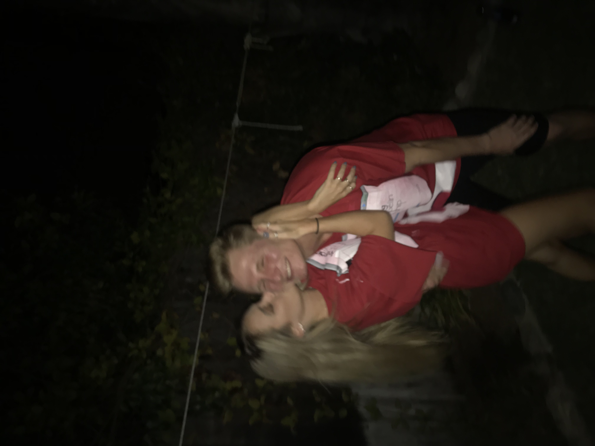

Our Story
Jack and Caroline’s story began like any classic love story: with a megaphone.
Caroline and her best friend, Kate, got their hands on a megaphone and decided to entertain themselves by yelling at unsuspecting students on campus while hiding. Naturally, they decided to take it up a notch and climbed to the fourth floor of the parking garage, where they had a bird’s-eye view of everyone below—and the perfect view of Caroline’s next target: a frat bro in a gym tank.
Without hesitation, Caroline yelled, “NO EATING ON THE SIDEWALK!” before ducking behind the wall to avoid being spotted.
A few moments later, Jack walked up behind Caroline and asked if she had been calling to him, since his car just happened to be parked on that very same level. After deciding she was both hilarious and pretty, he asked for her number. As she typed in her phone number, they realized they shared the same 858 area code. It turned out they had grown up in the same hometown but somehow never crossed paths until that day.
What started as a completely random encounter turned into something neither of them saw coming.

Between Jack teaching Caroline how to drive his old stick-shift BMW, countless walks to and from class, and Jack’s determined persistence, they spent more and more time together.
Who knew one very loud public service announcement would lead to forever? Sometimes the best things really do happen when you’re least expecting them.